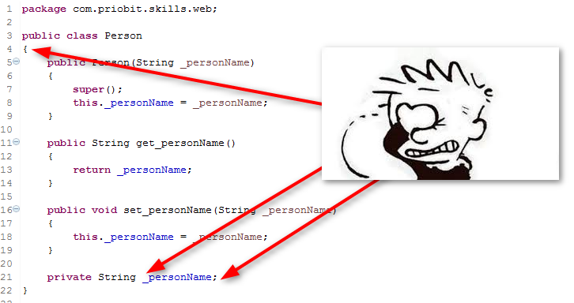
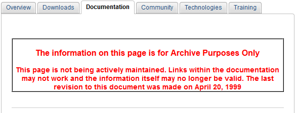
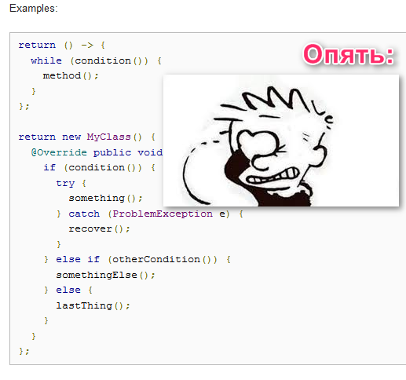
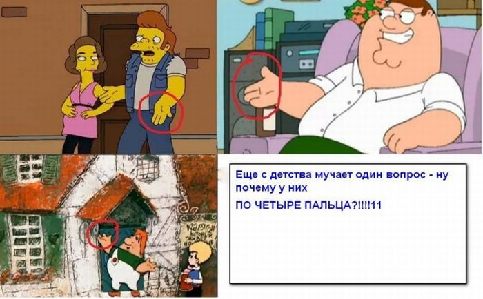

.
.
Внимание! В этой главе я буду просить вас читать Java Code Conventions. Ссылка на этот документ приводится незамедлительно.
Весь остальной текст этой главы можно, и даже нужно:
НЕ ЧИТАТЬ!...
Данная глава не описывает какую-либо специфическую ошибку, и ее текст никогда не будет отправляться в ответном письме, после проверки ваших работ. Соответственно, глава эта никогда не послужит причиной того, что ваша работа не будет принята.
Однако назначение у этой главы все равно — очень подлое.
Она послужит введением в раздел, содержащий бесконечность, ну просто самых омерзительных ошибок
.
Мерзость их будет заключаться в том, что они покажутся вам мелкими-мелкими, недостойными внимания и требующими для исправления 3-5 секунд времени.
Вы же потратите минимум пол дня на ожидание ответного письма с указанием такой ошибки, и еще день-полтора на чтение истерического триллера в трех томах, на тему того, как вы не поставили пробел перед операцией присваивания или посмели назвать класс с маленькой буквы.
Следовательно, я более чем уверен в том, что получая в ответ на свою работу любую ошибку из текущего раздела, вы будете чуть более злы, чем обычно, нервы ваши будут пошаливать, и уж точно — вы не откажете себе в удовольствии, в голос (и громко) поупражняться в применении специфических слово-форм, характерных для вашей местности, и употребляющихся исключительно в негативных коммуникациях, за исключением тех редких случаев, когда слово-форматми этими вы пытаетесь отреагировать на какое-либо событие, повергшее вас в крайнюю степень впечатления.
Да твоюже-тудаже! Краткое описание введения в раздел с мелкими ошибками! Как его закончить-то? А то, боюсь я, что вы уже во всю применяете слово-формы, заставляя ваших соседей за стеной ходить по комнате тише, а слушать внимательнее...
Все, переходим к заключительной, главной части, кроме которой в этом разделе читать больше нечего.
Итак, друзья, все ошибки, которые представлены в этом разделе, не взяты из воспаленного мозга вашего препода — ни в коем случае! Я думаю, вы уже знаете, а те кто еще не знают, будут приятно удивлены тем, что такие вопросы как:
Не придумывается нами от балды, и не передается как семейный секрет от отца к сыну. Все это, внимание:
СТАНДАРТИЗИРОВАНО И ЗАДОКУМЕНТИРОВАНО В СПЕЦИАЛЬТНОМ ДОКУМЕНТЕ!
И документ этот называется
Java Code Conventions!
Что по-русски можно прочитать как
Соглашения по написанию исходного кода на языке Java
.
Друзья, не забывайте, пожалуйста, о тяжелой судьбе Винни-пуха. И старайтесь избежать такой судьбы! Помните:
Даже если у вас очень хорошее правильнописание, проверьте, чтобы оно не хромало.
В общем, вместо того, чтобы продолжать читать это введение, перейдите скорее по ссылке, и полистайте PDF-документ с Code Conventions. Он занимает всего 25 листов и сэкономит вам 25 дней во время прохождения нашего курса, и все остальные дни вашей профессиональной Java-карьеры.
Ссылка на Code Conventions от компании Oracle:
Однако дописав это введение, я понял, что такую же ссылку необходимо поместить в самом верху этого текста.
А еще снабдить ее важным предупреждением, что дальше можно не читать.
Пойду-ка я подумаю, как написать это важное предупреждение так,
чтобы не пришлось ссылку на Conventions в отдельную главу выносить
.
А вы, кстати, — можете полное опиcание главы пока почитать. Там в конце дается ссылка на Code Conventions от Google.
Хе-хе-хе, я садист
— подумалось мне сейчас.
Ха-ха-ха, ты наивный!
— подумалось вам в тот момент, когда вы скролили страницу вниз точно так же,
как при чтении
лицензионного соглашения к ПО
.
Друзья, как вы уже узнали из краткого описания текущей главы, все разделы секции Красота кода
будут описывать незначительные ошибки, которые разработчики могут допустить,
если не следуют соглашениям о написании кода на языке Java, или, проще говоря —
Java Code Conventions.
Сразу же стоит сказать, что нарушение Code Conventions никак не влияет на работу ваших программ, их производительность и корректность вычислений.
Code Conventions — это документ, который описывает
эстетическую сторону программирования
.
У людей других профессий, Code Conventions — это как этикет, как разница между
позвОнишь
и позвонИшь
.
Согласитесь, если человеку позвОнят
, то ничего страшного не произойдет —
он все равно услышит от собеседника все, что ему нужно и ответит, что хотел.
Но многих коробит, когда им звОнят
.
И если вы хотите знать реакцию разработчиков на ситуации, когда кто-то из команды нарушает Code Conventions,
то найдите среди своих знакомых интеллигента в нескольких поколениях и сообщите ему, что:
Если вдруг ему позвОнят и спросят, ЧЕ он хочет,
то пусть он заказывает тортЫ, потому что те денежные средствА,
которые получают инженерА, ну очень малы, чтобы покупать ИХНИЕ
мясные тефтЕли, хотя тефтЕли, конечно,
и смотрятся красивЕе и ВАЩЕ ОНИ – ЧОТКИЕ, ОЙБТА!
Потом наблюдайте за его реакцией. Только будьте осторожны — не переборщите. Люди интеллигентные все таки... Мало ли что.
Держите под рукой томик Достоевского на всякий случай.
И последнюю фразу про чоткость тефтель
, наверное, лучше вообще не произносить — тут не то что интеллигент — никто не выдержит,
и этим же томиком Достоевского заедет вам между носа .
Так вот, если весь вышеизложенный сюрр пернести в плоскость программирования, то получим точно такую же негативную реакцию ваших коллег на то, что вы называете классы с маленькой буквы, не отступаете на положенное количество пробелов во вложенных блоках кода, не используете пробельных строк и так далее.
Однако в отличие от обычной жизни, негативная реакция на правильнописание
при разработке ПО, имеет под собой достаточно веские основания.
...ну, конечно, не считая того, что почти все программисты большие педанты и перфекционисты,
а не программисты скорее сказали бы — большие зануды и мозгоколебалы, однако это предмет, пусть и не менее жаркого,
но все же — совершенно отдельного спора...
Итак, в чем же основания?
Вспомните себя в универе. Приходилось ли вам переписывать конспекты у своих друзей, так как вы, к большому сожалению
,
не смогли посетить лекцию, потому что именно в это же время, как раз по теме вашей будущей кандидатской диссертации, в соседнем НИИ,
засекреченном под пивнуху в советском стиле, вел семинар профессор Кхе-кхо-вский, а он с этим семинаром в вашем городе только один день?
Или даже круче — приходилось ли вам списывать из чужого конспекта прямо на экзамене,
потому профессор Кхе-кхо-вский в этом семестре прям серию мастер-классов
давал, и все они, как назло
— аккурат во время лекций!
Так вот, вспомните, что самое сложное в чужих конспектах? Ну, конечно же:
ПОДЧЕРК И СИСТЕМА СОКРАЩЕНИЙ
Иногда бывали такие конспекты, что проще и быстрее было прочитать по этой теме энциклопедию, чем одну лекцию из этого конспекта.
Но вот что удивительно — владелец конспекта все прекрасно читает. Даже если предмет вырви мозг
,
и этот предмет не понимает никто в вашей группе, включая самого препода, неважно — владелец конспекта может сделать первое и главное дело
— он:
МОЖЕТ ЕГО ПРОЧИТАТЬ!
А теперь давайте подумаем, что было бы, если бы в вашей группе все, абсолютно все
ПИСАЛИ И СОКРАЩАЛИ ОДИНАКОВО?
К пятому курсу (да что там к пятому — ко второму!) вы могли бы спокойно списывать с любого конспекта, даже не дочитывая предложения до конца!
Почему?
Потому что, читая один и тот же стиль, ваши глаза очень быстро вырабатывают мышечную память, и уже совсем скоро вы замечаете — для того,
чтобы прочитать текст в том стиле, который вы видели до этого тысячи раз, необязательно подключать мозг — достаточно только глаз.
Соответственно, мозг в это время может быть занят более важными делами. Например, пониманием прочитанного
.
В разработке программ то же самое — десятки разработчиков, часто из разных стран. Требования, которые не понятны ни вам, ни менеджерам, ни заказчику. Сроки, которые, естественно, прошли еще вчера и так далее.
Задумайтесь, стоит ли в этой гремучей смеси из программирования, Dead Line-ов и ада искать время еще и на то, чтобы понять стиль написания друг друга?
Конечно же, нет!
Именно поэтому нам нужен Code Conventions. Нам нужно нечто, чтобы разработчики
регламентировали подчерк своего исходного кода
для того, чтобы разработчики
Читая чужой код, думали в это время – как писать свой!
Да что там говорить — прочитайте еще раз предание о Вавилонской башне, и вы вспомните, что можно построить, понимая друг друга, и что случается, когда вы друг друга понимать перестаете.
Соответственно, главный вывод никак не изменился после краткого описания главы, и сформулировать его можно следующим образом:
Вам нужно прочитать оригинальный Java Code Conventions от компании Oracle вот прямо сегодня вечером!
А ссылка на документ с Code Conventions вот:
Однако есть еще несколько моментов, которые можно рассмотреть в процессе обсуждения Code Conventions. И раз уж вам все равно нечего делать (вы ведь читаете до сих пор), то давайте их рассмотрим прямо сейчас. Это позволит нам не только закрыть вопрос Code Convention-а, но и сделать это основательно и со всех сторон.
Момент первый. Локальный Code Conventions.
То есть — Code Conventions, который принят внутри вашей компании или даже внутри одной команды одного проекта.
Наверное, это наиболее важный вопрос из всех нижеперечисленных, и вам придется учитывать его, когда вы вольетесь в свой первый дружный коллектив Java-профессионалов.
А поскольку вопрос серьезный, то начать его рассмотрение я предлагаю с лучшего, на мой взгляд, видео-tutorial-а, который я смог отыскать на данный момент:
Согласитесь, какой прекрасный tutorial! Ну кто из нас не ездил к своей бабушке? Особенно хорошо такие ситуации проявляются в период ранней юности,
вот именно в момент приезда, когда вы, весь такой, слегка подросший, и уже впитавший прочные знания великого и могучего русского
(вы ведь уже успели декламировать в школе Мой дядя самых честных правил...
, и имели успех!),
едете к бабушке на лето, и прямо не терпится вам доехать поскорее, потому что вы уже придумали приветствие, которое бабушку впечатлит без сомнения!..
...И вот, вы уже видите бабушку, и тянетесь к ней чтобы она вас расцеловала, а пока она расцеловывает, вы все это время набираете побольше воздуха, готовясь произнести то самое, заготовленное:
ЗдраВствуйте (с особым упором на среднее В), мать моего отца!
Но не успеваете... Потому что бабушка уже всех расцеловала, и у нее к вашему приезду давно все готово, и она первая гововит вам:
Ну что вы расшаперились там на пороге? Заходите исть скорее в дом!
...А после этого все — никаких больше здраВствуйте — вы просто смотрите глупо по сторонам и думаете,
что придется вам как-то находить с бабушкой общий язык, а то могут возникнуть коммуникативные сложности в те моменты,
когда организм мой неистово возжелает писТчи
(с особым упором на среднее Т, но, поверьте, — это один из последних ваших лексических выпендрежей),
а бабушка вместо этого начнет одевать вас по-теплее...
Конечно, в начале такое положение дел пугает. Но вот проходит неделя-другая, и вы уже прекрасно себя чувствуете, и понимаете бабушку с полуслова! А когда мама с папой приезжают вас навестить, то теперь уже папа не успевают сказать свое заготовленное:
Приветствуем потомство, явленное планете сей, в пик страсти пылкой двух любящих родительских сердец!
Потому что вы с порога берете старт диалога:
Э... Мам, бать, вы че? Разболокайтесь-то тама. Сенцы мытые третьего дня так-ни-сяк!..
Блин... Пора бы давно уже, наверное, перейти к выводам...
Друзья, обязательно настанет тот день, когда вы пересечете порог своей первой компании. Вас познакомят с командой, вас введут в проект. В этой команде будет очень много авторитетных людей — мидлы, сеньеры, и даже — архитекторы. Пожалуйста, запомните:
Теоретических знаний по Java у вас будет больше, чем у всех этих архитекторов вместе взятых!
Да, никто из них не вспомнит, когда переполняется int,
как перекрывается private и что такое полиморфизм. А вы вспомните.
И среди всех этих знаний, одно из самых почетных мест в вашей голове будет занимать официальный Oracle Code Conventions. Потому что, к тому времени вы не просто его прочитаете. Вы выучите его, вы распечатаете его и поклеите вместо обоев. Да блин, к моменту первой встречи с командой вы не будете помнить, как звучат ингредиенты воздухоосвежителя на казахском — вы везде читали Code Conventions!
Естественно, главное, что вам захочется, как можно скорее — выпустить этих теоретических бесов из своей головы, и начать использовать их на практике!
Здесь будьте, пожалуйста, особенно осторожны, потому что открыв первый класс на новом проекте, вы можете увидеть вот это:
В этом классе ужасно все!
долбаная фигурная скобка с новой строки!
Но это еще и не самое страшное. Самое страшное то, что вам с этой вакханалией придется не просто мириться — вам придется следить, чтобы
И далее вакханалия продолжала оставаться такой же!
Потому что мы формируем, наконец, основное правило текущей темы:
Локальные соглашения по написанию кода ВСЕГДА
имеют более высокий приоритет перед Oracle Code Conventions!
И если ваша команда по какой-то причине решила, что фигурные скобки блоков будут записываться с новой строки
(а решила она так, скорее всего, потому что, либо архитектор у них вырос из C++ разработчика,
либо они все бывшие really skilled С++ guys. Хотите верьте, хотите нет, самое страшное — это влиться в коллектив бывших skilled С++ guys
),
то
Друзья, из вышеприведенных пунктов самый опасный — это попытка переубедить и заставить всех делать правильно
.
Ни к чему, кроме пустых холиваров, потери времени и напряженного отношения к вам ваших коллег это не приведет.
Поймите, у этой команды уже сложилась традиция такого стиля кодирования.
У них уже работает та самая мышечная память глаз.
И ваше правильно
для них, как луч света для снявшего повязку впервые, за много лет:
Он не радует, он — режет!
На эту тему, кстати, (тему назойливых поправок в малозначащих вопросах с вашей стороны) есть еще один замечательный tutorial. Но мне очень совестно показать вам его в открытом виде. Во-первых, это старый баян. Во-вторых, он не сильно смешной. В-третьих, он отсылает нас к самой низкой теме юмора, той, которая соседствует с талией. И самое главное — он оскорбляет филологов! Так что, если вы желаете, то можете изучить его в скрытой секции на свой страх и риск.
Естественно, мы не можем закончить столь важный вопрос таким спорным учебником, поэтому под занавес обсуждения я предлагаю вам свои мысли по тому,
как все-таки можно попытаться направить ваших коллег на путь истинного стиля кодирования
,
если вам ну никак не возможно мириться с текущим тотальным беспределом на вашем проекте.
Во-первых, делайте это мягко, время от времени, желательно — в неформальной обстановке. Пытайтесь найти себе, пусть и медленно, пусть и немного, но союзников, а не стремительно превратить всех вокруг во врагов.
Во-вторых, не предлагайте сразу тотально переформатировать все исходники проекта — на это все равно никто не пойдет. Начните с одного или нескольких мелких моментов и предложите их исправить. Естественно, исправляться они будут вами и в нерабочее время.
Попытайтесь закрепить успех из предыдущего пункта и предложите вашему team lead-у ввести в проект
Checkstyle Development Tool, который будет следить за соблюдением соглашений в вашем проекте.
Естественно, предлагать его надо тогда, когда его у вас на проекте нет, а то вас вообще бояться начнут
.
Ссылка на Checkstyle Development Tool:
Ну и, наконец, сами становитесь скорее Java-архитектором!
И уже свой новый проект (а у вас будет новый проект) вы начнете так, как в книге написано
, если, конечно,
за это время не привыкнете к тому, как надо, потому что заткнись!
, хе-хе-хе.
Ну и теперь, наверное, мы уже очень всесторонне рассмотрели этот важный вопрос, и можно его заканчивать.
Момент второй. Java Code Conventions под угрозой исчезновения!
Друзья, выше в этой главе, я два раза дал вам ссылку на Code Conventions. По этой ссылке сразу откроется PDF-документ с необходимым текстом. Однако, если вы предпочтете слегка прогуляться по просторам интернета, в поисках официального Code Conventions, то вы вполне можете натолкнуться и на такую страницу:
Самое плохое в этой странице — вот это леденящее кровь сообщение:
Которое на примерный русский можно перевести следующим образом:
Уважаемые пользователи нашей Jav-ы, Code Conventions ваш, скорее мертв, чем жив.
Файл этот не апдэйтился аж с апреля 1999-го.
Никакой поддержки по нему мы не предполагаем.
Работают ли ссылки в этом документе — не то, чтобы мы не знаем — нам все равно!
И вообще, мы можем удалить его в любой момент безвозвратно.
Мы понимаем, что это огорчает вас до глубины души, но на все ваши огорчения мы клали черничным тортом!
Вы что с 99-го года не научились буквы в коде писать?
Ой, все! Идите уже работать, не дурите нам галаву!
Перевод можно продолжать еще долго, однако, уверен, что вы поняли суть:
Java Code Conventions, как официальный документ может исчезнуть!
Тогда нам придется искать другой официальный документ, который будет держать в рамках приличия наши безудержные желания записать открывающую скобку блока с новой строки.
Я, к большому сожалению, (и стыду!) не нашел официальной страницы, на которой бы представители Oracle написали —
Пацаны, без паники! Вот вам новый официальный док. Он не сломается, он — на века!
Беглый обзор интернета дал мне только одну мало-мальски приличную документацию по этому вопросу. Это документ
Java Coding Guidelines от Software Engineering Institute (SEI)
Ссылка на этот документ вот:
Судя по сообщениям с форумов — это как раз и есть тот документ, который призван заменить Oracle Code Conventions.
Ребята, здесь нужно оставить важное предупреждение — Я не читал этот документ!

Я не знаю, насколько он качественный, и не знаю, действительно ли он стал официальным сводом правил кодирования. Соответственно, это увлекательное путешествие в мир непознанных стандартов
вам придется совершить самостоятельно
Однако я, на вашем месте, не стал бы этого делать.
Вместо этого, я ограничился бы документом от Oracl-а.
Он хоть и заархивирован, но при этом содержит все, что вам потребуется, чтобы начать правильно кодировать.
(Ну сохраните его локально, если боитесь потерять. У меня на компе этих Conventi-нов больше чем кода
)
А после этого я перешел бы к чтению книг, которые способны научить не только кодировать, но и программировать.
Таких книг — огромное количество, каждый выбирает на свой вкус. Я могу рекомендовать вам (опираясь не только на свое мнение, но и на мнение тысяч Javer-ов по всему миру) следующие две:
И, несомненно:
Эти книги будут не просто рассказывать вам, как нужно программировать, они заставят вас понять — что вы программируете!
После этого вопрос Как надо?
отпадет сам собой.
Ну и текущий вопрос, я думаю, нам можно закрывать. Или, выражаясь печальной терминологией этого раздела — архивировать.
Момент третий. Code Conventions от компании Google!
Опять же, в продолжение предыдущего пункта — пока шарился по интернету в поисках официального Code Conventions от Oracle, случайно нашел официальный Code Conventions от Google:
Вы же все равно, рано или поздно, пойдете работать в Google. Там, первое, что вам придется делать — учить стиль кодирования, принятый в компании. Поэтому, если ознакомитесь с ним сейчас, то в первые дни работы в компании у вас освободиться немного времени, и вы сможете потратить его на выяснение более важных вопросов. Например, сколько бесплатных MacBook-ов вам положено в неделю, если вы — Junior Google Developer?
Но тут есть одно очень важное замечание! Беглый взгляд по этому документу, зацепился за следующий пункт:
Каждый вложенный блок кода должен смещаться на ДВА
пробела.
Получается вот так:
Друзья, я не знаю, когда вы там собираетесь переходить в Google, но до того, пока это не случиться, пожалуйста, запомните:
Вложенные блоки кода должны смещаться на ЧЕТЫРЕ
пробела!
Всегда! И никаких дискуссий на эту тему, нигде кроме Googl-а, с вами никто вести не будет! Если вас тоже с детства интересовал этот вопрос:
То мы можем поздравить друг друга — тайна раскрыта! Все эти ребята еще в детстве пытались сообщить нам, что Google не прав, и
отступать надо на ЧЕТЫРЕ ПРОБЕЛА
!
Ну вот и всё — все сверхважные вопросы относительно Code Conventions нами рассмотрены.
Друзья, не забывайте, для того, чтобы сейчас двигаться дальше и учиться программировать, а не читать километры такой же отвлеченной болтовни о вопросах, которые можно описать одним предложением, вам нужно:
Прочитать Java Code Conventions, ссылку на который я давал здесь уже много раз!
Уверен, если вы ознакомитесь с этим документом, то большинство ошибок, приведенных в этом разделе, вы не допустите.
Ссылку я Code Conventions я привел вам в самом начале главы, для того, чтобы она не затерялась среди бурного потока перепутанных мыслей.
Если вы уже что-то читали от меня, то справедливо могли подумать, что бурный поток перепутанных мыслей
начался сразу же после заголовка, так что, на всякий случай, ссылку на Code Conventions я дублирую вам еще раз
(это в который раз уже? ):
Ну, а если не хотите, то, пожалуйста, читайте главы из этого раздела.
Это, знаете, такой Code Conventions с легким налетом садизма, в котором правило из трех предложений формируется в статье из трех страниц.
О! Этот раздел, нужно было назвать не «Красота кода», а 50 оттенков Code Convention-а
.
В общем, идите и запрограммируйте мне красиво!
А вам за внимание — спасибо огромное